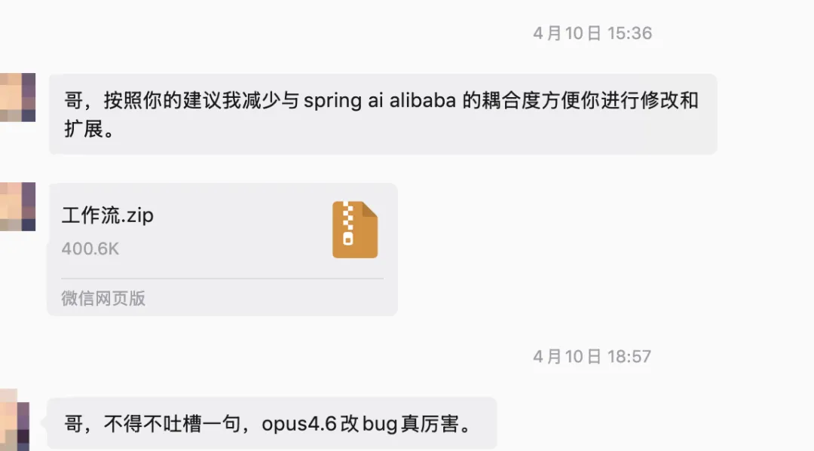
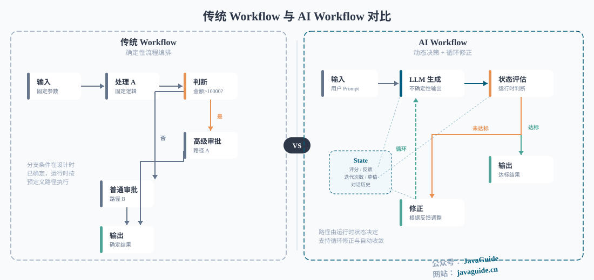
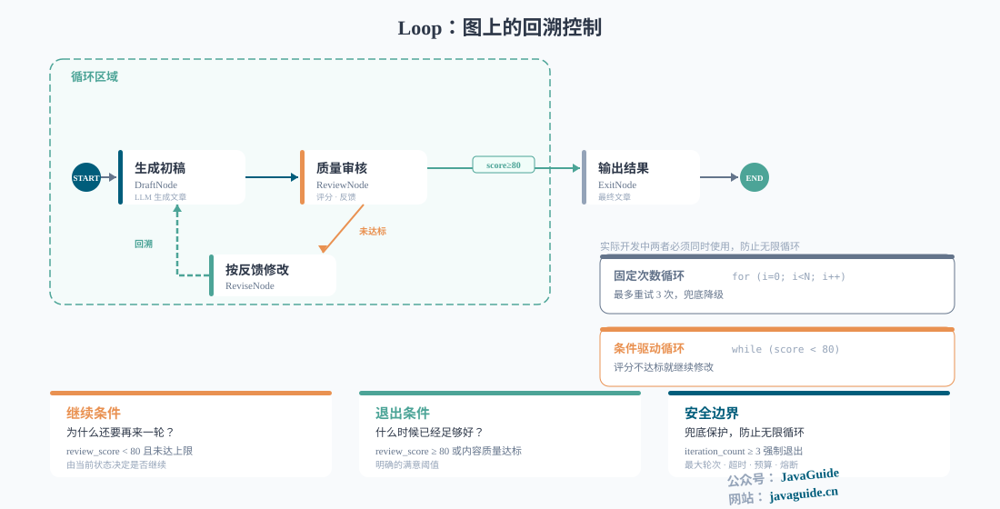
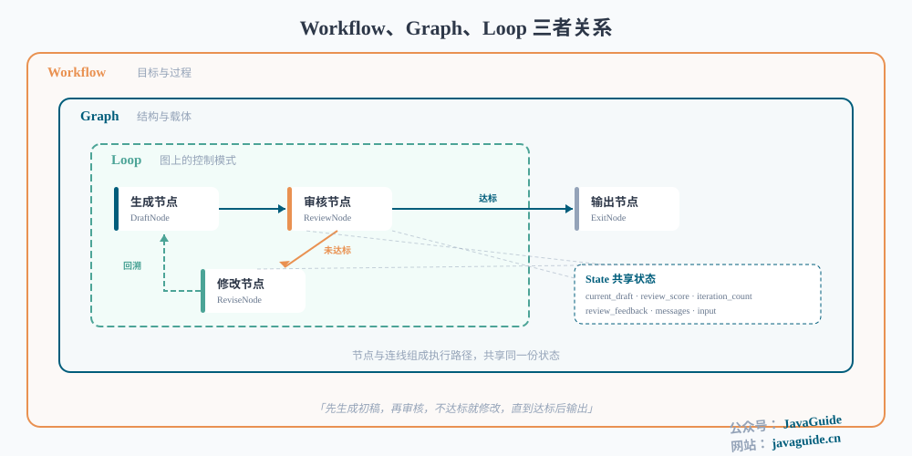
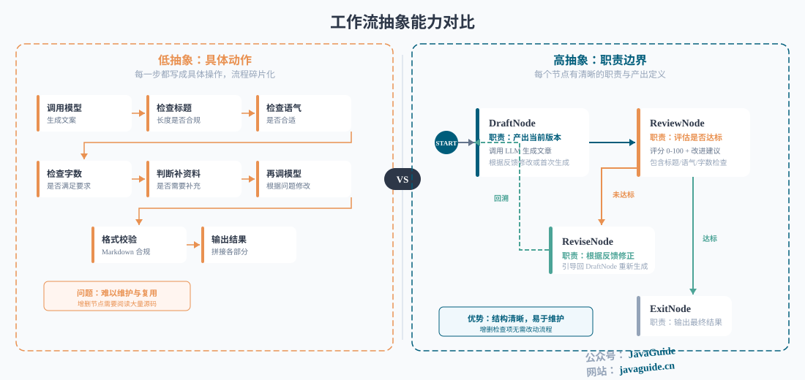
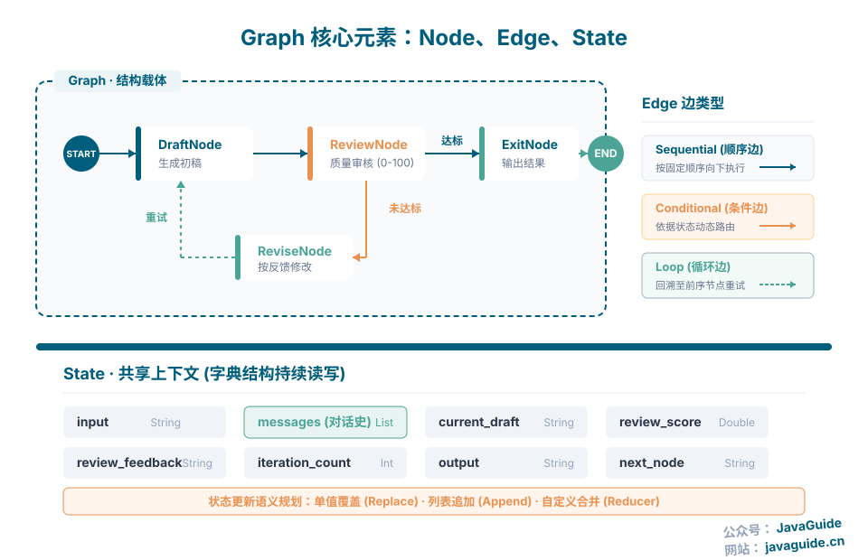
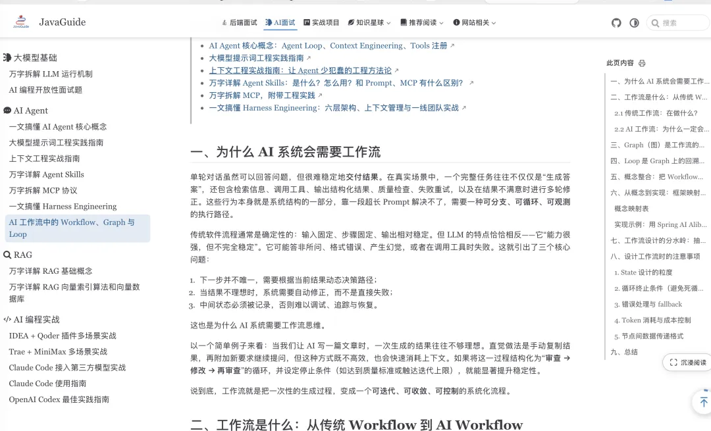

AI 工作流三核概念：Workflow 是目标、Graph 是结构、Loop 是控制模式
来源：微信公众号 归档日期：2026-04-21 抓取状态：成功 原文字符：19249｜配图：8 张
摘要速览
很多开发者把 AI 工作流当成"换壳的传统流程引擎"，用 if-else 串几个 Prompt 就算完事。但 LLM 输出天然不确定、工具调用随时失败、上下文有硬上限——线性流程不够用，需要能"动态决策、自动修正、可控收敛"的执行机制。这篇文章建立 Workflow/Graph/Loop 三者的层次认知。
核心内容
- 三者层次关系（一句话版本）
- Workflow = 目标与过程："这件事怎么做完？"
- Graph = 结构与载体：把步骤变成节点 + 边 + 共享状态，是 Workflow 的实现形式
- Loop = 图上的控制模式：图内通过回边（Back Edge）实现"不满意就再来一轮"
- Graph 三要素
- Node（节点）：执行单元，读 State → 执行业务逻辑 → 写回 State
- Edge（边）：控制流，常见类型：顺序边、条件边（候选集设计时确定）、动态路由（候选集运行时确定，适合 map-reduce）
- State（状态）：节点间共享的"工作记忆"（键值对），有三种更新策略：
- 覆盖（Replace）：新值替换旧值，适合单值字段（如分类结果）
- 追加（Append）：新值追加到列表，适合对话历史（messages）
- 自定义合并（Custom Reducer）：如 add_messages 按 ID 追加或更新
- ⚠️ 并行节点写同一覆盖字段会有竞态问题，需提前规划
- Loop 的关键设计点
- 固定次数循环（for）vs 条件驱动循环（while）：AI 场景通常用 while（由内容质量决定轮次），但两者必须同时使用——加固定上限作为安全兜底
- 嵌套循环各层独立：外层"质量迭代"、内层"工具重试"，各有独立退出条件和计数器
- 可靠 Loop 三要素：继续条件 + 退出条件 + 安全边界（最大轮次/超时/熔断）
- AI 工作流 vs 传统工作流的核心差异
- 传统：同一节点输入固定→输出确定，分支条件在设计时定好
- AI：路径选择依赖运行时质量评估，同一节点可能因输出不确定而反复执行
- 本质：需要"动态决策 + 自动修正 + 可控收敛"，这是 Graph + Loop 的存在理由
- 框架映射（Spring AI Alibaba / LangGraph）
- Node → StateGraph 的节点方法 /
@Node注解 - State →
GraphState/ TypedDict - 条件边 →
add_conditional_edges()/@ConditionalEdge - Append 策略 →
AppendStrategy/Annotated[list, operator.add]
可执行启发
（待补充）
我的想法
（留给你补充）
为什么有用
在实际搭建 AI Agent 工作流时，很容易把 Loop 写死在节点逻辑里、把状态散落在各处。这套概念模型给出了清晰的抽象原则：Node 抽象职责边界，Edge 抽象流转规则，State 抽象必须持久的信息——三者分离，工作流才能经得起复用和扩展。
具体步骤（工作流抽象原则）
- State 设计：按业务含义分块（用户输入 / 当前结果 / 审核结论 / 流程控制），不要太粗也不要太细
- Node 抽象职责：节点名即职责，不写"调了哪个 API"，写"产出什么结果"
- Edge 抽象流转：用条件边表达分支与循环，不在图外写 if-else
- Loop 三要素：每个 Loop 必须有继续条件 + 退出条件 + 最大轮次上限
适用 / 不适用场景
- 适用：需要多轮迭代的 AI 任务（文章生成审核、代码生成测试、数据分析修正）
- 不适用：一次性简单查询（线性流程已足够，引入 Graph 是过度设计）
原文沉淀
目录
- 一、为什么 AI 系统会需要工作流
- 二、工作流是什么：从传统 Workflow 到 AI Workflow
- 2.1 传统工作流：在做什么？
- 2.2 AI 工作流：为什么一定会走向 Graph、Loop
- 三、Graph（图）是工作流的结构表达（重要）
- 四、Loop 是 Graph 上的回溯能力（重要）
- 五、概念整合：把 Workflow、Graph、Loop 串起来
- 六、从概念到实现：框架映射与代码示例
- 概念映射表
- 实现示例：用 Spring AI Alibaba 构建文章审核工作流
- 第一步：定义状态和更新策略
- 第二步：实现节点
- 第三步：组装 Graph
- 七、工作流设计的分水岭：抽象能力
- 八、设计工作流时的注意事项
- 1. State 设计的粒度
- 2. 循环终止条件（避免死循环）
- 3. 错误处理与 fallback
- 4. Token 消耗与成本控制
- 5. 节点间数据传递格式
- 九、总结
今天分享的内容还是蛮重要的，我和一位朋友断断续续写了快两周。不论是后端还是对AI应用开发感兴趣，都建议看看。

很多刚上手 AI 工作流的开发者都有过类似的困惑：这不就是传统工作流换了个壳吗？为什么不用 Camunda、Temporal 这些成熟引擎？甚至觉得把几个 Prompt 用 if-else 串起来就算“工作流”了。
但真正上手做项目后，这些想法很快会被现实打脸。LLM 的输出天然不确定，单次生成往往不达标，工具调用随时可能失败，上下文窗口还有硬上限。光“跑一遍就完事”的线性流程不够用，你需要的是一套能动态决策、自动修正、可控收敛的执行机制。
今天这篇文章就来梳理 AI 工作流中三个核心概念——Workflow、Graph、Loop，帮你建立从概念到实现的完整认知。本文约 1.3w 字，建议收藏，通过本文你将搞懂：
为什么 AI 系统需要工作流：单轮对话和固定流程为什么不够用？动态决策、自动修正、可控收敛分别解决什么问题？
- Workflow、Graph、Loop 三者的层次关系：Workflow 是目标与过程，Graph 是结构与载体，Loop 是图上的控制模式——三者如何协作？
- Graph 的核心元素：Node（节点）、Edge（边）、State（状态）分别是什么？条件边、动态路由、循环边有何区别？State 的更新策略怎么选？
- Loop 的设计要点：固定次数循环 vs 条件驱动循环、嵌套循环的独立性、安全边界的三要素。
- 从概念到代码：Spring AI Alibaba 和 LangGraph 的概念映射表 + 完整的”生成→审核→修改”工作流代码实现。
- 工作流设计的分水岭：高抽象 vs 低抽象，Node、Edge、State 的抽象原则。
一、为什么 AI 系统会需要工作流
单轮对话虽然可以回答问题，但很难稳定地交付结果。在真实场景中，一个完整任务往往不仅仅是“生成答案”，还包含检索信息、调用工具、输出结构化结果、质量检查、失败重试，以及在结果不满意时进行多轮修正。这些行为本身就是系统结构的一部分，靠一段超长 Prompt 解决不了，需要一种可分支、可循环、可观测的执行路径。
传统软件流程通常是确定性的：输入固定、步骤固定、输出相对稳定。但 LLM 的特点恰恰相反——它“能力很强，但不完全稳定”。它可能答非所问、格式错误、产生幻觉，或者在调用工具时失败。这就引出了三个核心问题：
- 下一步并不唯一，需要根据当前结果动态决策路径；
- 当结果不理想时，系统需要自动修正，而不是直接失败；
- 中间状态必须被记录，否则难以调试、追踪与恢复。
这也是为什么 AI 系统需要工作流思维。
以一个简单例子来看：当我们让 AI 写一篇文章时，一次生成的结果往往不够理想。直觉做法是手动复制结果，再附加新要求继续提问，但这种方式既不高效，也会快速消耗上下文。如果将这一过程结构化为“审查 → 修改 → 再审查”的循环，并设定停止条件（如达到质量标准或触达迭代上限），就能显著提升稳定性。
说到底，工作流就是把一次性的生成过程，变成一个可迭代、可收敛、可控制的系统化流程。
二、工作流是什么：从传统 Workflow 到 AI Workflow

传统 Workflow 与 AI Workflow 对比
上图可以直观看到两类工作流的差异：传统 Workflow 更偏向“固定步骤 + 明确分支”的过程编排；AI Workflow 则更依赖运行时的状态（State）来动态决定下一步，并通过循环（Loop）把“生成—评估—修正”变成可收敛的过程。
2.1 传统工作流：在做什么？
先说基本定义：Workflow 就是为了完成某个目标，把任务拆成若干步骤，并规定这些步骤如何协作推进。它回答的问题是：“这件事怎么做完？”
在传统工作流体系中，流程设计虽然也支持事件驱动和动态分支（如 BPMN 2.0 的信号事件、Camunda 的 DMN 决策表），但其核心假设是：给定相同输入，同一节点的执行结果是确定的。以 BPMN 2.0 规范为代表的主流工作流引擎（如 Camunda、Temporal、Apache Airflow）支持并行网关、包容网关、子流程、补偿事务等丰富的控制结构，远非简单的线性顺序。但分支条件通常在设计时确定，运行时按照预定义路径执行。
AI 工作流与传统工作流的关键差异在于：路径选择依赖于运行时生成内容的质量评估，且同一节点可能因输出不确定性而需要反复执行。例如审批流程、订单流转、ETL 数据管道等传统场景中，分支条件是明确的（金额 > 10000 走高级审批）；而 AI 场景中，“生成结果是否达标”这个判断本身就需要运行时评估，且评估结论可能驱使流程回到之前的步骤反复修正。
2.2 AI 工作流：为什么一定会走向 Graph、Loop
到了 AI 场景，同样的“流程”一词，含义不太一样了。相比传统工作流强调的顺序性与确定性，AI 工作流需要处理的是一个充满不确定性的执行环境。我们面对的不再只是“按步骤执行”，还包括：
- 结果是否达标要在运行时判断。
- 是否需要继续重试，要由当前状态决定。
- 某一步失败后，系统不再是简单的报错然后结束，而是考虑是否应该降级、回退或换一种策略。
- 节点之间传递的不只是参数，还包括上下文、草稿、评分、错误信息、历史轮次等状态。
所以 AI Workflow 与传统 Workflow 都有流程，差别在于前者更强调动态决策和状态驱动。一旦我们想要表达“下一步不唯一”或者“不满意就再来一轮”，线性列表就不够用，自然会落到 Graph（结构）与 Loop（回溯）这两类概念上。
三、Graph（图）是工作流的结构表达（重要）
沿用贯穿案例：假如我们要搭一条「生成初稿 → 质量审核 → 不达标则修改 → 再回到审核」的路径。这里每一步对应图的 Node，步骤之间的走向由 Edge 表达，整条链路读写的共享上下文就是 State。
图里最基础的元素有三个：
- Node（节点）：表示一个执行单元，其主要有三大功能：读取状态（State）、执行业务逻辑并加工状态、将加工好的状态放回。在文章审核例子里，典型有「生成初稿」「质量审核」「按反馈修改」；此外还可以扩展检索、格式校验、人工审批等。
- Edge（边）：是流程图中的控制流抽象，用于描述节点之间的执行路径及其触发条件，决定流程在运行时如何在不同节点之间进行调度与跳转。常见的边类型如下：
| 边的类型 | 解释 |
|---|---|
| 顺序边（Sequential Edge） | 节点按固定顺序执行，执行完当前节点后直接进入下一个节点，不依赖条件或状态判断。 |
| 条件边（Conditional Edge） | 在设计时定义的有限候选路径中，根据运行时状态（State）选择其一。候选目标节点在设计时确定，运行时只做选择。Spring AI Alibaba 通过 addConditionalEdges() 并传入候选节点映射实现。 |
| 动态路由（Dynamic Routing） | 目标节点不在设计时完全预定义，而是由运行时逻辑（如 LLM 决策、map-reduce 分发）动态确定，候选集合可以是开放的。例如 LangGraph 的 Send API 可以在运行时动态决定向某个节点发起多少次并行调用。 |
| 循环边（Loop Edge） | 节点可以回到自身或前序节点重复执行，用于重试、迭代优化或循环推理，直到满足终止条件，通常是由条件边与顺序边结合形成。 |
| 终止边（Terminal Edge） | 将流程引导至结束状态，不再继续执行后续节点，用于输出最终结果或结束工作流。 |
| 并行边（Parallel Edge） | 一个节点同时分发到多个后续节点并行执行，用于多任务处理、RAG/工具并发等场景。 |
实际工程中，条件边和动态路由是一个连续谱系——条件边的候选集在设计时确定但选择逻辑可以依赖运行时状态（如 LLM 评分），动态路由的候选集本身在运行时才确定（如 LangGraph 的
SendAPI 动态创建并行分支）。多数场景下条件边已够用，动态路由适用于 map-reduce 等需要运行时决定并行分支数量的场景。
- State（状态）：表示在流程执行过程中持续被读写的共享上下文，是节点之间真正传递的“工作记忆”。它本质上是一个键值对数据结构（类似 Java 的
Map<String, Object>、Python 的dict、TypeScript 的Record<string, any>），用于在各节点之间传递和修改数据。
需要注意的是，State 的设计不仅涉及“存什么”，还涉及“怎么更新”。在实际的工作流框架中，不同字段通常有不同的更新语义：
- 覆盖（Replace）：新值直接替换旧值。适用于单值字段，如分类结果、当前状态。在 Spring AI Alibaba 中对应
ReplaceStrategy，在 LangGraph 中对应无 reducer 的默认行为。
- 追加（Append）：新值追加到已有列表。适用于累积型字段，如对话历史（messages）。在 Spring AI Alibaba 中对应
AppendStrategy，在 LangGraph 中对应Annotated[list, operator.add]。
- 自定义合并（Custom Reducer）：通过自定义函数决定合并逻辑，例如 LangGraph 的
add_messages会根据消息 ID 进行追加或更新。
当多个并行节点同时写入同一个使用覆盖语义的字段时，会出现竞态问题（LangGraph 会抛出 INVALID_CONCURRENT_GRAPH_UPDATE 错误）。因此，设计 State 时需要提前规划哪些字段可能被并行写入，并为它们选择合适的更新策略。
下面是一些常用的状态字段（可根据实际业务自由扩展，不必拘泥于样例）：
| Key（字段名） | Value 类型 | 说明 | 生命周期 |
|---|---|---|---|
| input | String | 用户输入问题 | 全流程 |
| messages | List | 对话历史 | 全流程 |
| retrieval_result | List | RAG 检索结果 | 中间 |
| tool_result | Object | 工具调用结果 | 中间 |
| llm_response | String | LLM 原始输出 | 中间 |
| intermediate_steps | List | 中间执行步骤记录 | 全流程 |
| next_step | String | 控制流跳转节点（可选，部分框架如 Spring AI Alibaba 通过此字段配合条件边实现路由；其他框架如 LangGraph 通过条件边函数返回值路由，无需此字段） | 当前执行 |
| output | String | 最终输出结果 | 结束 |
如果只看 Node 和 Edge，我们会得到一张“能跑起来的路径图”；加上 State，这张图才能在运行时做决策。
图结构比线性结构更贴近 AI 系统的真实形态，因为很多 AI 应用的控制流本来就是图，只是早期常被临时写成 if-else、重试逻辑或分散在不同模块里的状态机。
四、Loop 是 Graph 上的回溯能力（重要）
在同一套「文章审核」里：审核不通过时，控制流不应结束，而应沿某条边回到「修改」或「重新生成」——这就是 Loop 在业务上的含义。技术上，它表现为图上的回边（Back Edge）。
需要区分本文的 Loop 与 Agent 基础篇中的 Agent Loop。Agent Loop 是 Agent 的顶层运行引擎——整个 Agent 在一个 while 循环中反复执行“推理 → 行动 → 观察”直到任务完成。而本文的 Loop 是 Graph 内部的控制模式——特定节点子集通过回边形成的迭代修正循环。两者的关系是：Agent Loop 是外层循环，Graph Loop 可以嵌套在其中的某个节点或子图内。

Loop 概览：循环机制示意
很多人第一次接触 AI 工作流时，会把 Loop 理解成“多跑几次”。这不算错，但还不够准确。更准确地说：Loop 是图结构上的一种控制模式。当某条边根据当前状态把控制流送回到先前节点时，就形成了 Loop，正如上图所示，重点在判断是否达标，在循环的内部 LLM 会根据提示词的要求对结果进行“评分”，如果满足就会输出，否则“打回重写”。
常见的 Loop 主要有两种：
- 固定次数循环：更像
for。例如“最多重试 3 次”。
- 条件驱动循环：更像
while。例如“只要评分低于 80 分，就继续修改”。
AI 场景里，第二类通常更有代表性。因为“跑几次”往往不是先验确定的，而是由内容质量、工具执行结果、外部反馈共同决定的。但是实际开发中两者必须同时使用，因为 LLM 的不确定性可能会导致生成的内容一直不合格，此时我们就需要参考固定次数循环思想对内容进行降级兜底处理。
在实际工程中，还经常遇到嵌套循环的情况：外层循环负责“质量迭代”（生成 → 审核 → 修改），内层循环负责“工具重试”（某个节点内部调用外部 API 失败后的指数退避重试）。这两层循环的作用域、终止条件和计数器是独立的——内层重试耗尽不应影响外层的迭代预算，外层退出也不意味着内层可以无限制重试。设计嵌套循环时，需要为每层明确独立的退出条件和安全边界。
总之，一个可靠的 Loop 一定包含三件事：
- 继续条件：为什么还要再来一轮。
- 退出条件：什么时候已经足够好，可以结束。
- 安全边界：最大轮次、超时、预算、熔断条件。
如果没有这些约束，Loop 很容易从“自我修正”变成“无限打转”。
仍然放回文章审核的例子里，Loop 不只是“多试几次”，它是“审核结论驱动下一跳”。只有当评分未达标、且还没超过最大轮次时，流程才会从 ReviewNode 回到 ReviseNode；一旦达到阈值或触发边界条件，就应该退出并给出结果。到这里，循环已经变成了一种可控的回溯机制。
五、概念整合：把 Workflow、Graph、Loop 串起来

Workflow、Graph、Loop 三者关系概览
可以用一句话收束三者的层次关系：Workflow 是目标与过程，Graph 是结构与载体，Loop 是图上的控制模式。
继续沿用同一个“写文章并审核”的例子：
- 当我们说“先生成初稿，再审核，不达标就修改，直到达标后输出”，我们描述的是 Workflow。
- 当我们把
生成节点 → 检查节点 → 修正节点画成节点与连线，并让它们共享同一份状态时，我们得到的是 Graph。
- 当我们规定“审核不通过就回到修改，直到评分达标或达到上限”为止，我们定义的就是 Loop。
这三者是同一件事的三个观察角度：Workflow 关注任务目标，Graph 关注结构组织，Loop 关注回溯控制。
六、从概念到实现：框架映射与代码示例
前面建立了 Node、Edge、State 的概念模型，接下来看这些概念如何映射到具体的框架。以下以 Spring AI Alibaba Graph（Java 生态）和 LangGraph（Python 生态）为例。
概念映射表
| 概念 | Spring AI Alibaba | LangGraph |
|---|---|---|
| 状态（State） | OverAllState + KeyStrategyFactory | TypedDict + Annotated[type, reducer] |
| State 覆盖语义 | ReplaceStrategy | 默认（无 reducer） |
| State 追加语义 | AppendStrategy | Annotated[list, operator.add] |
| 节点（Node） | NodeAction 接口 | 函数 / Runnable |
| 顺序边 | addEdge(source, target) | add_edge(source, target) |
| 条件边 | addConditionalEdges(source, fn, map) | add_conditional_edges(source, fn) |
| 循环 | 条件边回指先前节点 / LoopAgent | 条件边回指先前节点 |
| 固定次数循环 | LoopMode.count(N) | 自行维护计数器 |
| 条件驱动循环 | LoopMode.condition(predicate) | 条件边 + while 逻辑 |
| 持久化 | MemorySaver / RedisSaver 等 | MemorySaver / SqliteSaver |
| 人机协同 | interruptBefore() + updateState() | interrupt_before + update_state |
| 编译执行 | StateGraph.compile(CompileConfig) | StateGraph.compile() |
实现示例：用 Spring AI Alibaba 构建文章审核工作流
考虑到我的公众号的读者偏 Java 技术栈，这里笔者就基于 Spring AI Alibaba Graph 来实现贯穿全文的“生成 → 审核 → 修改”工作流。
第一步：定义状态和更新策略
// 配置状态键策略：控制每个字段如何更新
public static KeyStrategyFactory createKeyStrategyFactory() {
return () -> {
HashMap<String, KeyStrategy> strategies = new HashMap<>();
strategies.put(“input”, new ReplaceStrategy()); // 用户输入
strategies.put(“messages”, new AppendStrategy()); // 对话历史（追加）
strategies.put(“current_draft”, new ReplaceStrategy()); // 当前草稿（覆盖）
strategies.put(“review_score”, new ReplaceStrategy()); // 审核评分（覆盖）
strategies.put(“review_feedback”, new ReplaceStrategy()); // 审核反馈
strategies.put(“iteration_count”, new ReplaceStrategy()); // 迭代计数
strategies.put(“output”, new ReplaceStrategy()); // 最终输出
strategies.put(“next_node”, new ReplaceStrategy()); // 路由控制
return strategies;
};
}注意 messages 使用 AppendStrategy（对话历史持续追加），而 current_draft 使用 ReplaceStrategy（每次修改覆盖旧版本）。
第二步：实现节点
// 生成初稿节点
publicstaticclass DraftNode implements NodeAction {
privatefinal ChatClient chatClient;
public DraftNode(ChatClient.Builder builder) {
this.chatClient = builder.build();
}
@Override
public Map<String, Object> apply(OverAllState state) throws Exception {
String input = state.value(“input”).map(v -> (String) v).orElse(“”);
String draft = chatClient.prompt()
.user(String.format(“请根据以下要求撰写文章：%s”, input))
.call().content();
return Map.of(
“current_draft”, draft,
“next_node”, “review”
);
}
}
// 质量审核节点
publicstaticclass ReviewNode implements NodeAction {
privatefinal ChatClient chatClient;
public ReviewNode(ChatClient.Builder builder) {
this.chatClient = builder.build();
}
@Override
public Map<String, Object> apply(OverAllState state) throws Exception {
String draft = state.value(“current_draft”).map(v -> (String) v).orElse(“”);
int count = state.value(“iteration_count”).map(v -> (int) v).orElse(0);
String prompt = String.format(
“请评估以下文章质量，给出 0-100 的评分和改进建议。\n” +
“以JSON格式返回：{\”score\”: 85, \”feedback\”: \”...\”}\n\n%s”, draft);
String response = chatClient.prompt().user(prompt).call().content();
// 解析评分和反馈（实际项目中使用 Jackson/Gson）
double score = parseScore(response);
String feedback = parseFeedback(response);
String nextNode = (score >= 80 || count >= 3) ? “exit” : “revise”;
return Map.of(
“review_score”, score,
“review_feedback”, feedback,
“iteration_count”, count + 1,
“next_node”, nextNode
);
}
}
// 修改节点：根据审核反馈修正内容
publicstaticclass ReviseNode implements NodeAction {
privatefinal ChatClient chatClient;
public ReviseNode(ChatClient.Builder builder) {
this.chatClient = builder.build();
}
@Override
public Map<String, Object> apply(OverAllState state) throws Exception {
String draft = state.value(“current_draft”).map(v -> (String) v).orElse(“”);
String feedback = state.value(“review_feedback”).map(v -> (String) v).orElse(“”);
String revised = chatClient.prompt()
.user(String.format(“请根据反馈修改文章。\n\n原文：%s\n\n反馈意见：%s”, draft, feedback))
.call().content();
return Map.of(
“current_draft”, revised,
“next_node”, “review”
);
}
}
// 输出节点
publicstaticclass ExitNode implements NodeAction {
@Override
public Map<String, Object> apply(OverAllState state) throws Exception {
String draft = state.value(“current_draft”).map(v -> (String) v).orElse(“”);
return Map.of(“output”, draft);
}
}第三步：组装 Graph
public static CompiledGraph buildWorkflow(ChatModel chatModel) throws GraphStateException {
ChatClient.Builder builder = ChatClient.builder(chatModel);
var draft = node_async(new DraftNode(builder));
var review = node_async(new ReviewNode(builder));
var revise = node_async(new ReviseNode(builder));
var exit = node_async(new ExitNode());
StateGraph workflow = new StateGraph(createKeyStrategyFactory())
.addNode(“draft”, draft)
.addNode(“review”, review)
.addNode(“revise”, revise)
.addNode(“exit”, exit);
// 顺序边
workflow.addEdge(START, “draft”);
// 条件边：根据 next_node 字段决定路由
workflow.addConditionalEdges(“draft”,
edge_async(state ->
(String) state.value(“next_node”).orElse(“review”)),
Map.of(“review”, “review”));
workflow.addConditionalEdges(“review”,
edge_async(state ->
(String) state.value(“next_node”).orElse(“exit”)),
Map.of(
“revise”, “revise”, // 审核不通过 → 修改
“exit”, “exit” // 审核通过或达到上限 → 输出
));
// 修改后回到审核节点，形成循环
workflow.addConditionalEdges(“revise”,
edge_async(state ->
(String) state.value(“next_node”).orElse(“review”)),
Map.of(“review”, “review”));
workflow.addEdge(“exit”, END);
// 配置持久化：生产环境建议使用 RedisSaver 或数据库 Saver
var saver = new MemorySaver();
var compileConfig = CompileConfig.builder()
.saverConfig(SaverConfig.builder().register(saver).build())
.build();
return workflow.compile(compileConfig);
}在这个实现中，可以看到：每个 Node 只做自己名字说的事（DraftNode 负责生成、ReviewNode 负责评估、ReviseNode 负责根据反馈修正），Edge（条件边）控制路由，State（next_node、iteration_count、review_score）驱动决策。Loop 通过 review → revise → review 的回边实现（审核不通过则由 ReviseNode 修正内容后重新进入审核），安全边界由 iteration_count >= 3 保证。持久化配置确保流程中断后可以从最近的 checkpoint 恢复，而不是从头开始——这对包含 Loop 的长时间运行工作流尤为重要：如果一个已迭代 2 轮的审核流程在第 3 轮中断，恢复后应该继续第 3 轮而不是重新从第 1 轮开始。
更完整的示例（包括人机协同、持久化、流式输出）可参考 Spring AI Alibaba Graph 官方文档。
七、工作流设计的分水岭：抽象能力

高抽象与低抽象工作流对比
上图可以看到高抽象工作流将四个判断节点抽象成一个判断节点：评估是否达标。如果使用低抽象，那么当我们需要减少/添加新的判断节点时，需要花费时间去阅读源码寻找对应的节点。好的工作流关键看 Node、Edge、State 的抽象能否经得起复用与扩展，和步骤多少关系不大。
很多初学者设计工作流时，容易把每一步都写成具体动作，例如：调用模型生成文案；检查标题长度；检查语气是否合适；判断是否需要补资料；再调用模型修改。这样做短期可用，但流程会越来越碎，复用性也很差。更成熟的方式是把流程抽象到更稳定的结构层：
- Node 抽象职责边界：在这个节点中产出的结果该是什么样子的，必须出现哪些信息。而不是抽象“这一次调了哪个 API”。
- Edge 抽象流转规则：在什么状态下允许去哪、何时结束。用条件边表达分支与循环，而不是在图外写满 if-else。
- State 抽象推进任务时必须持久记住的信息：工单快照、审核结论、重试次数、错误码等，让路径有据可依。
例如在“生成并审核文章”的场景里，与其设计十几个零散节点来检查文章标题符不符合题意、文章字数是否满足要求，不如先抽象出几个更稳定的职责：
DraftNode：负责产出当前版本内容。
ReviewNode：负责评估当前结果是否达标。
ReviseNode：负责根据反馈修正内容。
ExitNode：负责在满足条件时输出最终结果。

Graph 核心元素：Node、Edge、State
八、设计工作流时的注意事项
真正把工作流落地时，问题往往不出在“图不会画”，而出在细节没有提前设计好。下面这些是实践里最常见的坑。
1. State 设计的粒度
- 太粗：所有东西都塞进一个大对象里，谁改了哪个字段不好查。
- 太细：字段拆得特别散，每个节点都要拼来拼去，容易出错。
- 建议：按业务含义分几块，例如「用户原始输入一块」「当前生成结果一块」「审核/评分结论一块」「流程控制用的一块（如当前步骤、重试次数）」。
2. 循环终止条件（避免死循环）
不要只写“如果不满意就继续优化”，而要明确：
- 最大轮次是多少？
- 评分阈值是多少？
- 超时或成本超限时怎么办？
- 连续失败后是否要 fallback。
3. 错误处理与 fallback
AI 工作流不是只处理“成功路径”。工具异常、模型超时、格式校验失败、外部接口限流，都应在图上有明确边：重试、降级（例如跳过某工具）、转人工、或输出“当前最优 + 错误说明”，而不是只靠外围 try-catch 吞掉。
Spring AI Alibaba 官方文档将错误分为四类，每类对应不同处理策略：
| 错误类型 | 示例 | 处理策略 |
|---|---|---|
| 瞬时错误 | 网络超时、API 限流 | 指数退避重试，设置最大重试次数 |
| LLM 可恢复错误 | 工具调用失败、输出格式异常 | 将错误存入 State，循环回去让 LLM 根据错误信息调整策略 |
| 用户可修复错误 | 缺少必要信息、指令不明确 | interruptBefore 暂停执行，等待人工输入后恢复 |
| 意外错误 | 未知异常 | 让异常冒泡，交给开发者调试 |
这些策略可以直接映射到分布式系统中成熟的弹性模式：
- 指数退避重试：工具调用超时 → 按 1s、2s、4s 递增间隔重试，设置最大次数（如 5 次），对认证失败等不可恢复错误直接跳过重试。
- 熔断器（Circuit Breaker）：连续 N 次 LLM 输出格式校验失败 → 熔断并降级到模板输出或更简单的模型，避免持续浪费 Token。
- 舱壁隔离（Bulkhead）：为不同外部 API 设置独立的并发上限，防止某个慢服务耗尽所有工作线程。
- 补偿事务（Saga）：多步骤操作中某步失败时，按反序执行已完成步骤的补偿操作（如撤销已创建的工单）。
需要注意，这些模式需要在节点内部或中间件层自行实现，Graph 框架提供的是执行骨架和状态管理，不是分布式弹性框架。具体实现建议：（1）重试和熔断逻辑封装在节点内部，通过 State 字段（如
retry_count、circuit_state）持久化状态；（2）舱壁隔离通过 Java 的Semaphore或 Resilience4j 在节点内实现；（3）补偿事务需要在 State 中记录已完成步骤的回滚信息，并设计专门的补偿节点。
4. Token 消耗与成本控制
Loop 会自然放大 Token 与延迟。设计时要提前思考：
- 哪些节点必须调用大模型，哪些可以用代码替代。
- 是否可以先粗筛，再精修。
- 是否需要在达到“足够好”时就提前结束，而不是追求“理论最优”。
5. 节点间数据传递格式
节点之间传什么、字段名怎么定义、结构化输出采用什么 schema，都应该尽早统一（例如统一用 JSON Schema 或 Pydantic 模型）。否则图一旦复杂，调试成本会急剧上升。
九、总结
用这套视角看问题，工作流就是一种工程建模能力。常见演进方向包括：
- Agent 化：节点从「固定脚本」变成「能自主选工具、拆子目标」的执行单元，但底层仍需要清晰的图与状态边界，否则难以观测与兜底。
- 多智能体协作：多个角色分工、对话或委托；与 CrewAI、LangGraph 多子图等思路一致，难点往往在共享 State 的权限与冲突解决。
- 人机协同：在关键节点插入人工审核、标注或纠偏，把 HITL（human-in-the-loop）当作一等公民写进图与状态机。
- 更长上下文与记忆：工作流与 RAG、会话记忆结合时，要特别注意 State 里哪些该进向量库、哪些只该留在本轮任务上下文，避免成本和隐私失控。
- Agent 安全：工作流为 LLM 输出引入了结构和约束，但也带来了新的攻击面。根据 OWASP LLM Top 10，需要重点关注三类威胁：
- 提示注入的级联影响：恶意用户输入可能覆盖系统提示，在工作流中逐节点传播放大。防御方式包括输入过滤、系统提示与用户输入严格分隔、对 LLM 输出做安全检测后再传递给下游节点。
- 工具调用的权限边界：遵循最小权限原则，每个节点只能访问其任务所需的工具，高风险操作（删除、发送）需通过人机协同节点确认。
- 输出内容安全过滤：LLM 输出在进入下游系统（数据库、前端渲染、Shell 命令）前必须经过校验，防止注入攻击、隐私泄露和幻觉传播。
除了上述通用风险，工作流还有两类特有的安全考量：
- State 污染：恶意输入通过节点处理后写入 State 的路由控制字段（如
next_node），可能影响后续条件边路由，跳过审核节点直接到达输出。防御：对 State 中的路由控制字段做白名单校验。
- Loop 放大攻击：恶意输入构造使 ReviewNode 永远返回低分，导致 Loop 达到最大轮次才退出，消耗大量 Token。防御：除了
iteration_count上限外，增加 Token 消耗预算作为独立的安全边界。
工作流框架会更新换代，但「图结构 + 状态 + 可控循环」这层抽象基本不会变。理解这套底层机制，比追各种具体框架更有价值一些。
AI 时代，语言已经越来越被弱化了。你只需要理解这些核心思想就够了，至于具体用什么语言，要看具体场景，具体编码的活都交给 AI。
⭐️后端 + AI 应用开发实战和面试指南（155k+ Star）：javaguide.cn


⭐️推荐阅读:
归属：[[02-输入/按主题/AI与效率/_index|AI与效率]]